Интерфейс для HMI панели крана-манипулятора
Дизайн, программирование, наладка
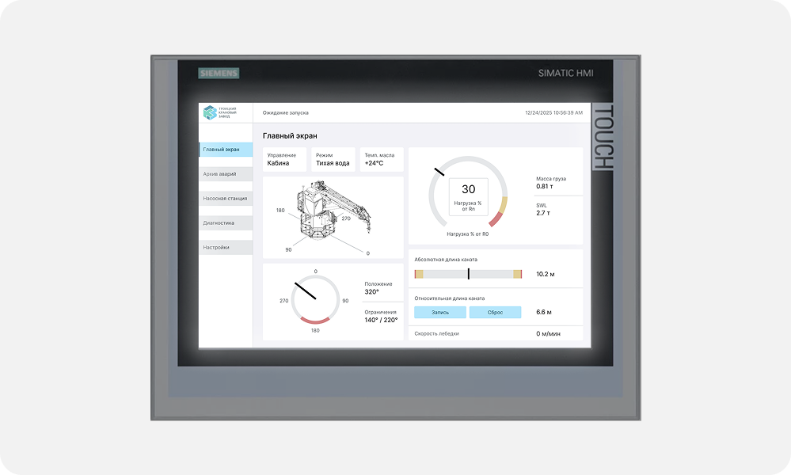
Контекст
Была поставлена задача создать дизайн для HMI панели крана-манипулятора.
В таких системах интерфейс имеет большое значение для безопасности людей. Оператор в аварийной ситуации должен быстро оценить все важные параметры и предпринять правильные действия по устранению неисправности.
Именно чистое, аккуратное оформление, понятные состояния элементов, заметные уведомления помогают контролировать всю систему.
Сложное оборудование нуждается в простом интерфейсе
Интерфейс должен быть безопасным и понятным
Ключевые требования
— Вся критическая информация — на главном экране — Мгновенное оповещение об авариях (без необходимости переключаться по экранам) — Управление сенсорным экраном в перчатках (крупные кнопки) — Минимализм и чёткая структура
Процесс и проектные решения
У меня не было возможности провести полноценные интервью с операторами. Я сделала то, что было в моих силах: — Обсудила с руководителем проекта его виденье интерфейса, какие параметры важно расположить на главном экране, а какие лучше убрать. За весь процесс создания произошло несколько итераций. — Изучила похожие проекты от других производителей — Ставила себя на место оператора: проходила по алгоритму его действий
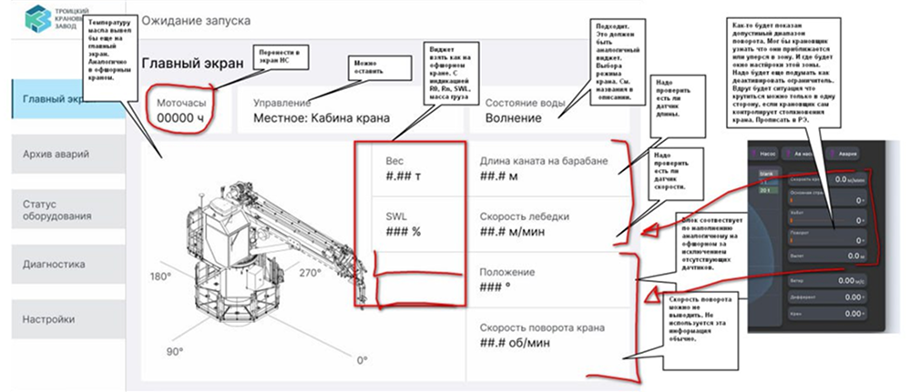
— Структура экранов и навигация
Я спроектировала навигацию с нуля. В системе 5 основных экранов, все доступны из бокового меню. Оператор видит, на каком экране находится, и может переключиться на любой другой в один клик.
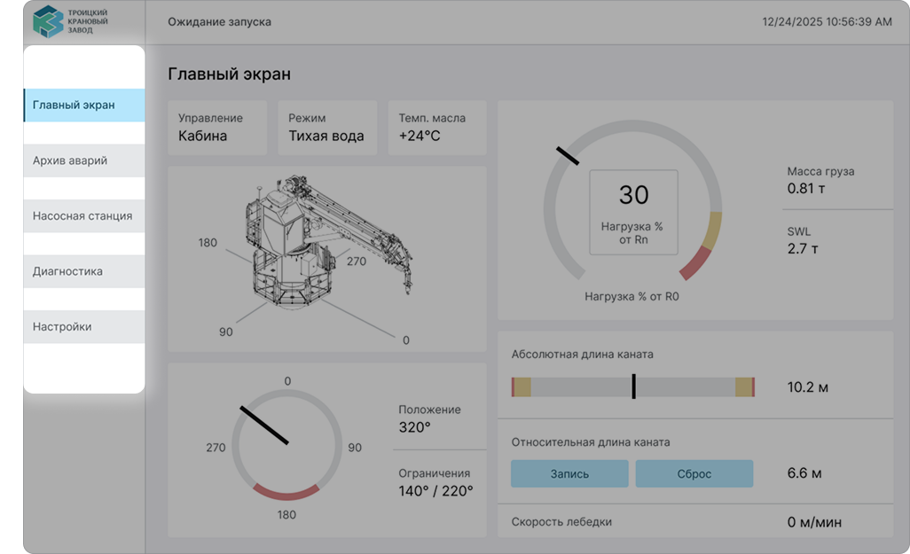
— Глобальная строка уведомлений
Вместо всплывающих окон — строка уведомлений, которая видна на всех экранах. Если возникает ошибка, оператор видит её сразу, даже если он находится в меню настроек.
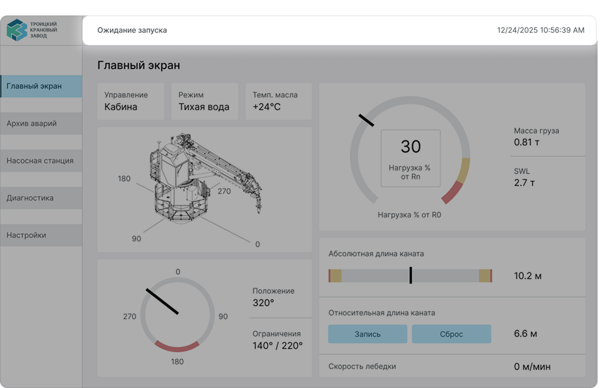
— Палитра
Я создала 2 темы: светлую и тёмную. Оператор может выбрать ту, которая удобнее в зависимости от времени суток и освещения.
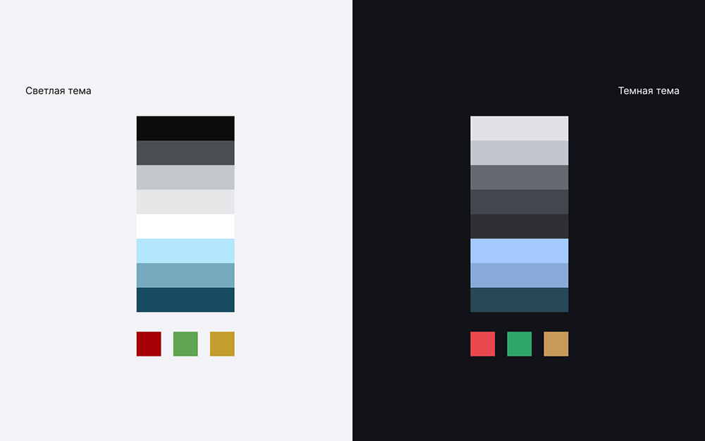
— UI-Kit
Составила UI-Kit с разными состояниями элементов. Так как проект был реализован в HMI от компании Siemens в Tia Portal, то состояний у кнопок 2 — только нажата или не нажата. В данном ПО нет возможности реализовать больше микро-взаимодействий.
Все кнопки — крупные. Я продумала, чтобы оператор в перчатках мог попасть пальцем в нужную область, не задевая соседние. Активные элементы выделены голубым цветом.
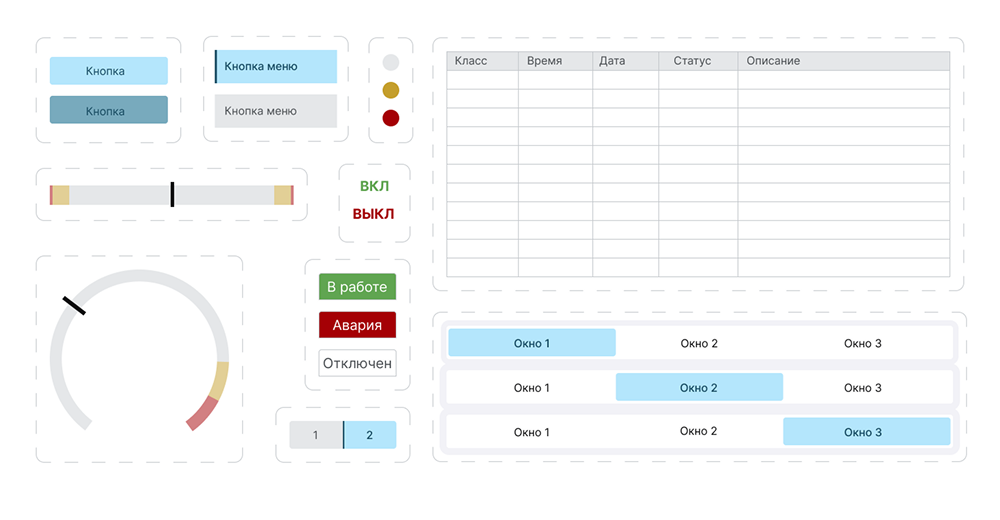
Визуал
— Главный экран
Этот экран оператор видит в первую очередь. Здесь собраны все параметры, которые критически важны для безопасной работы.
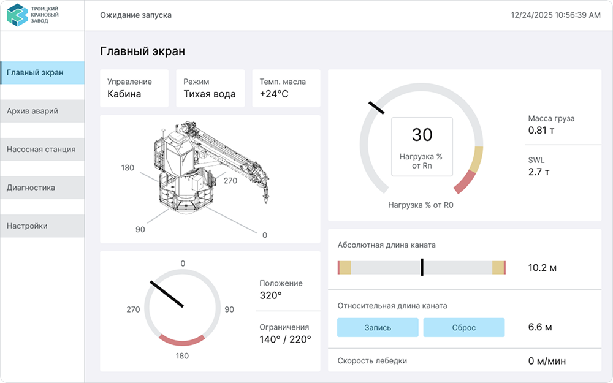
— Архив аварий
Просмотр текущих и произошедших ранее происшествий аварийного и предупреждающего характера. Оператор не просто видит, что случилось. Он может проанализировать, почему это произошло, и предотвратить повторение. Инженеры используют этот экран для диагностики системы после инцидентов.
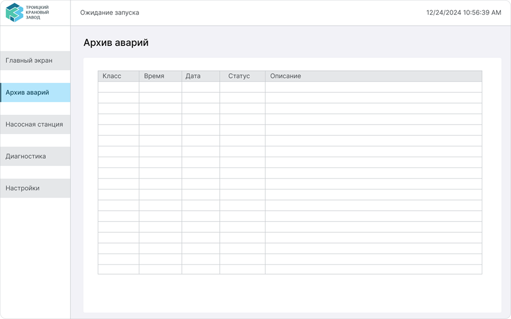
— Насосная станция
За движением крана стоит сложная гидравлическая система. Этот экран показывает состояние каждого её элемента в реальном времени.
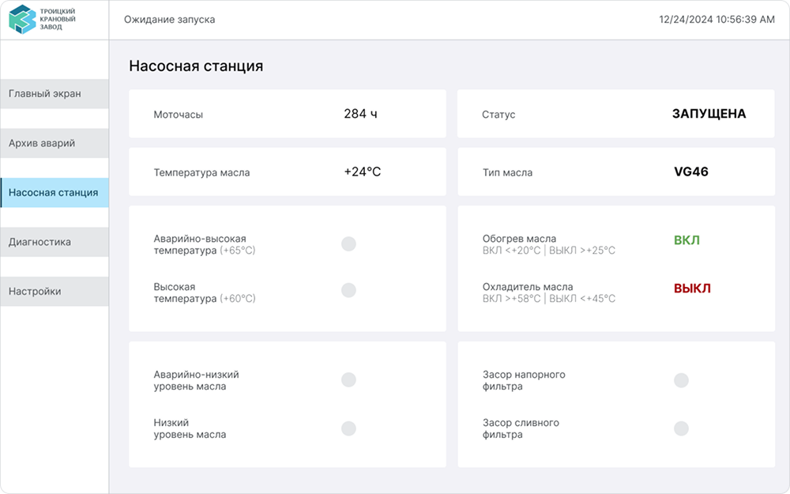
— Диагностика
Здесь отображаются состояния всех остальных устройств системы.
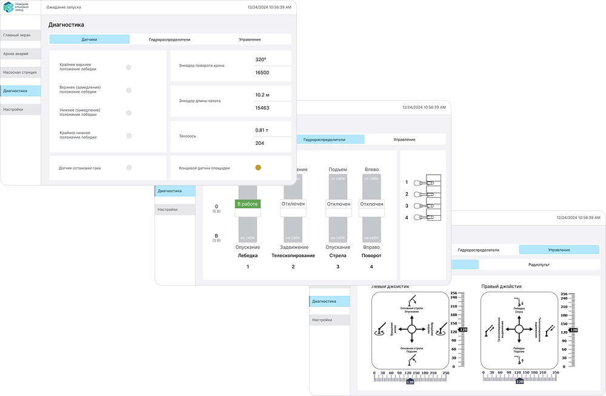
— Настройки
Оператор работает с панелью часами, у него должна быть возможность настроить интерфейс под себя.
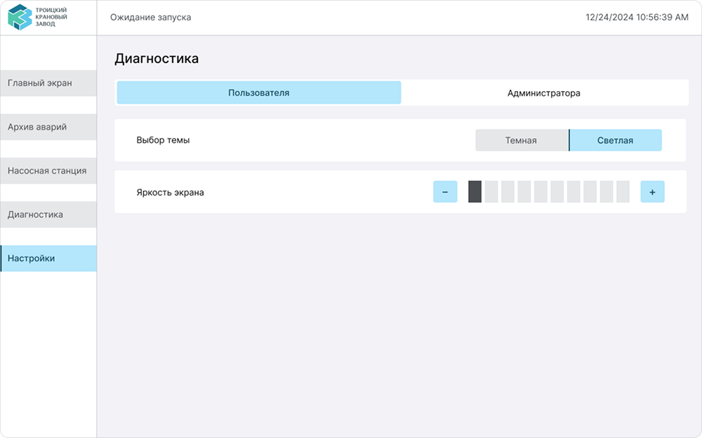
Результаты
Проект не был запущен на момент моего ухода, я передала реализованный интерфейс команде. По моей оценке, спроектированный интерфейс позволяет оператору: — Сократить время поиска критической ошибки с нескольких секунд до мгновенного считывания (глобальная строка уведомлений + цветовое кодирование) — Быстро оценивать два типа нагрузки (абсолютную и с учётом волнения) — это критически важно для безопасности в море — Управлять краном в перчатках без ошибок
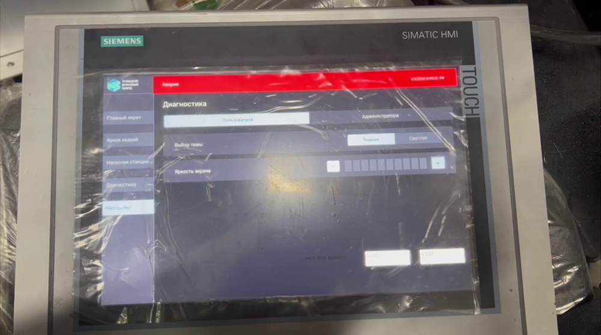